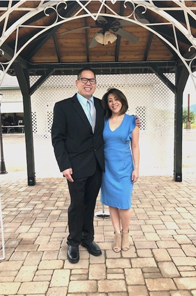

About Us
Carlo was born in Makati, Philippines, and, his parents moved to Southern California when he was a toddler. He has always been interested in cooking. Influenced at an early age by his mother and grandmother (Mama Ita), he blends a unique experience in each of his signature dishes, with flavor profiles rooted in Filipino culture. Carlo has a deep love for family, and enjoys introducing people to his rich heritage through food, creativity, and culinary expression.
Jennifer was also raised in Southern California, by Filipinx immigrant parents. Her passion in the hospitality “business” started at a young age.. She remembers charging $0.25 per cup of coffee to aunties and uncles playing cards at family parties as a child.
Both Carlo’s and Jennifer’s upbringing were filled with family gatherings and events with the wider Filipinix and Igorot communities. After getting married in Hesperia, California, they have carried on the tradition of family parties in their Santa Clarita home, where Carlo always cooks and Jennifer bakes. At each party, Jennifer and Carlo practice what they do best, bring people together. Jennifer remembers hearing the phrase, "Calajo Mengan" at family parties, which translates to, "Come and eat" in Ibaloi, Jennifer’s family’s dialect and native tribe. They now welcome you to their table, as if you are guests in their home.